Цветок – генеративный (предназначенный для полового размножения) орган покрытосеменных растений. Появление цветка позволило покрытосеменным привлекать опылителей – насекомых.
Цветоножка – укороченный стебелек, на котором расположен цветок. У сидящих цветков цветоножка отсутствует.
Цветоложе – расширенная часть цветоножки.
Пестик – образование, содержащее яйцеклетку. Имеет листовое происхождение. Совокупность пестиков называют гинецеем.
Тычинки – окружают пестик. Образуют пыльцу. Совокупность тычинок называют андроцеем.
Околоцветник – состоит из лепестков (составляют венчик) и чашелистиков (образуют чашечку). Чашечка – внутренняя часть листа, способна к фотосинтезу.
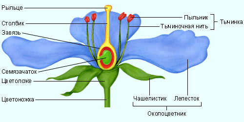
Рис. 1. Строение цветка (Источник)
Строение цветка
Возьмите несколько цветков различных растений. Рассмотрите их. Найдите цветоножку, цветоложе, околоцветник, тычинки и пестики.
Расчлените цветки. Посчитайте число частей околоцветника, тычинок и пестиков. Укажите тип околоцветника каждого из цветков (простой, двойной). Укажите тип чашечки (для цветков с двойным околоцветником): раздельнолистная или срослолистная. Тип венчика: сростнолепестный или свободнолепестный.
Зарисуйте и подпишите части цветка. Попробуйте составить формулу для каждого из цветков.
Околоцветник бывает двойной и простой. Двойной околоцветник состоит из листочков 2 различных типов (капуста, роза, лютики, горох и др.). Простой околоцветник (лилия, амариллис (см. Рис. 2), тюльпан) состоит из одинаковых листочков.
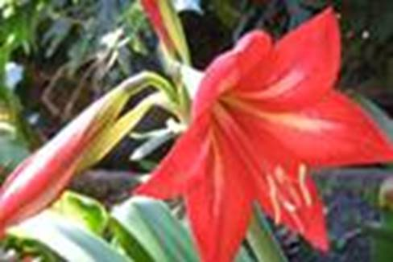
Рис. 2. Красный амариллис
Цветки ивы и ясеня вообще не имеют околоцветника. Их называют голыми.
Строение тычинки и пестика
Рассмотрите строение тычинки. Найдите пыльник и тычиночную нить. Рассмотрите пыльник под лупой или под микроскопом. Постарайтесь разглядеть пыльцевые зерна.
Рассмотрите внешнее строение пестика. Найдите рыльце, столбик и завязь. Разрежьте завязь поперек. Рассмотрите ее под увеличительными приборами. Найдите семязачаток, укажите, что из него формируется.
Существуют правильные (актиноморфные) и неправильные (зигоморфные) цветки.
У правильных цветков (см. Рис. 3) через околоцветник можно провести несколько осей симметрии (яблоня, вишня).
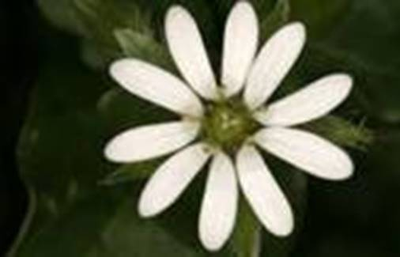
Рис. 3. Правильный цветок звездчатки
Через неправильные цветки (см. Рис. 4) можно провести только одну плоскость симметрии (горох, шалфей).
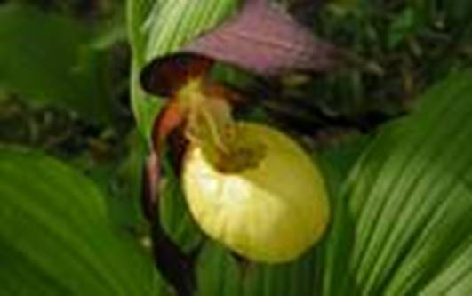
Рис. 4. Неправильный цветок башмачка настоящего
Каждая тычинка имеет пыльник, внутри которого созревает пыльца. Он расположен на тычиночной нити (см. Рис. 1).
Цветки примулы и амариллиса
Рассмотрите строение цветков примулы (см. Рис. 5) и амариллиса. Сравните их строение со строением цветков яблони.
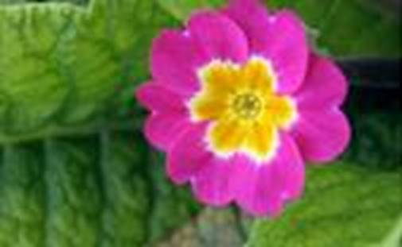
Рис. 5. Цветок примулы
Пестики имеют рыльце, столбик и завязь. В завязи расположены семязачатки, из которых после цветения разовьются семена (см. Рис. 6). По расположению в цветке выделяют верхнюю (стенки не срастаются с остальными частями цветка, у капусты), нижнюю (стенки завязи срастаются с другими частями цветка – у яблони) и полунижнюю (стенки завязи срастаются с другими частями цветка только в нижней части – у бузины) типы завязи.
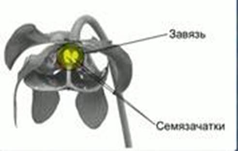
Рис. 6. Завязь и семязачатки
Цветки бывают раздельнополыми и обоеполыми. Обоеполые – цветки, в которых присутствуют и пестики, и тычинки. У некоторых растений (облепиха, остролист (см. Рис. 7)) в цветках присутствуют только тычинки либо только пестики – раздельнополые цветки.
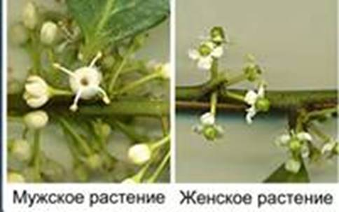
Рис. 7. Раздельнополые цветки остролиста
Двудомное растение – растение, на котором развиваются цветки только одного пола (тополь, конопля).
Однодомное растение – растение, на котором развиваются и пестичные, и тычиночные цветки (огурец, яблоня).
Формула цветка используется для краткой характеристики строения цветка.
При составлении формулы цветка пользуются следующими сокращениями (см. Рис. 8, 9):
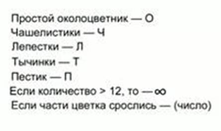
Рис. 8. Сокращения, используемые при составлении формулы цветка
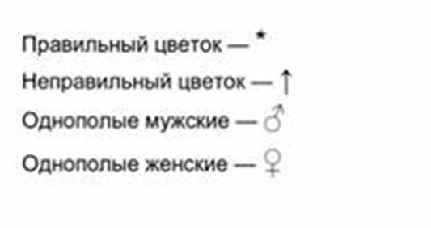
Рис. 9. Сокращения, используемые при составлении формулы цветка
Таким образом, формула тычиночного цветка огурца выглядит следующим образом (см. Рис. 10).
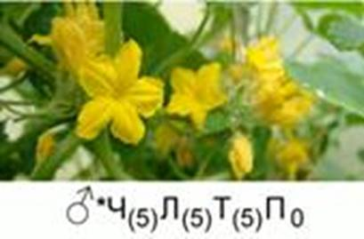
Рис. 10. Формула тычиночного цветка огурца
А формула пестичного цветка выглядит так (см. Рис. 11):
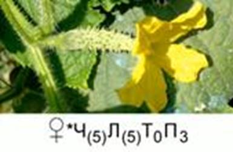
Рис. 11. Формула пестичного цветка огурца
Знаете ли вы, что…
Раффлезия Арнольда (см. Рис. 12) обладает самыми большими в мире цветами. Это паразитическое растение. Не имеет стебля и листьев. Опыляется падальными мухами, так как имеет вид и запах разлагающегося мяса. Семена прилипают к ногам крупных животных, таким образом распространяясь.
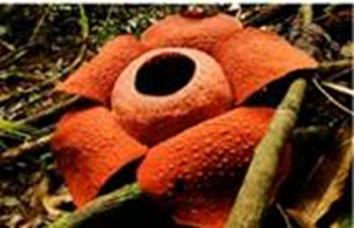
Рис. 12. Раффлезия
Двойной околоцветник, венчик состоит из белых или бело-розовых несросшихся лепестков – свободнолепестный. Чашечка сростнолистная. Цветок актиноморфный, обоеполый. Завязь пятигнездная.
Список литературы
1. Биология. Бактерии, грибы, растения. 6 кл.: учеб. для общеобразоват. учреждений / В.В. Пасечник. – 14-е изд., стереотип. – М.: Дрофа, 2011. – 304 с.: ил.
2. Тихонова Е.Т., Романова Н.И. Биология, 6. – М.: Русское слово.
3. Исаева Т.А., Романова Н.И. Биология, 6. – М.: Русское слово.
Дополнительные рекомендованные ссылки на ресурсы сети Интернет
1. Trifoly.ru (Источник).
2. Floriculture.ru (Источник).
3. Engschool18.ru (Источник).
Домашнее задание
1. Биология. Бактерии, грибы, растения. 6 кл.: учеб. для общеобразоват. учреждений / В.В. Пасечник. – 14-е изд., стереотип. – М.: Дрофа, 2011. – 304 с.: ил. – с. 138, задания и вопросы 3, 6 (Источник).
2. Дайте определение и приведите примеры актиноморфным и зигоморфным цветкам.
3. Что такое формула цветка? Каким образом ее записывают?
4. * Выберите 3 цветка растений разных видов и попробуйте составить их формулы.
{kind=link}